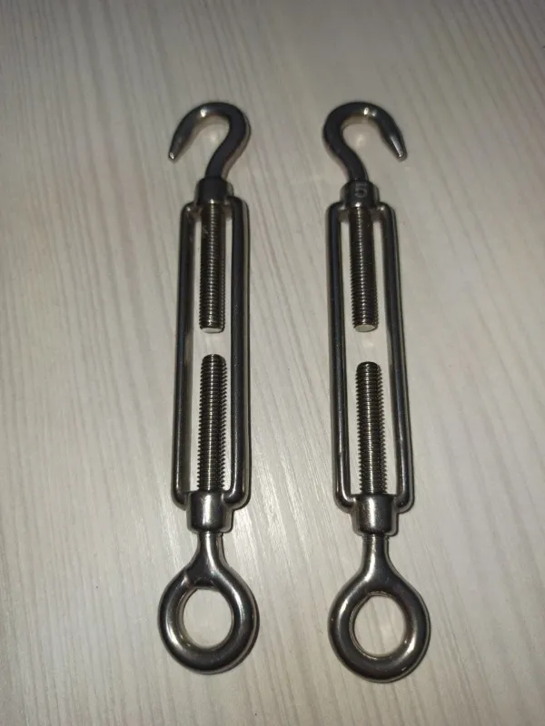

Натяжитель для троса
60 грн / 1 шт
Из нержавіючої сталі.
- Доставка Новою Поштою у відділення або кур'єром, відправка за 1–3 робочі дні; самовивіз у Дніпрі.
- Оплата при отриманні, на рахунок ФОП або готівкою при самовивозі.
- Повернення товару належної якості — 14 днів (крім виробів під ваш розмір).